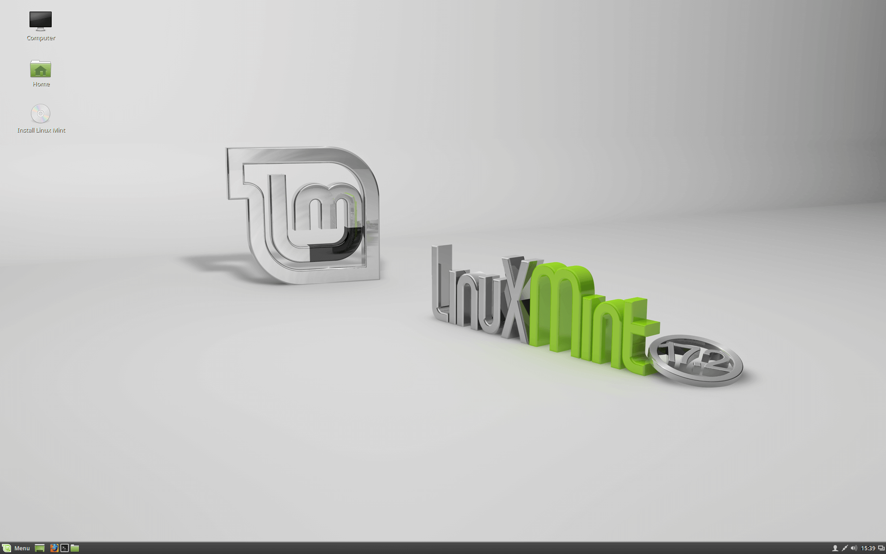
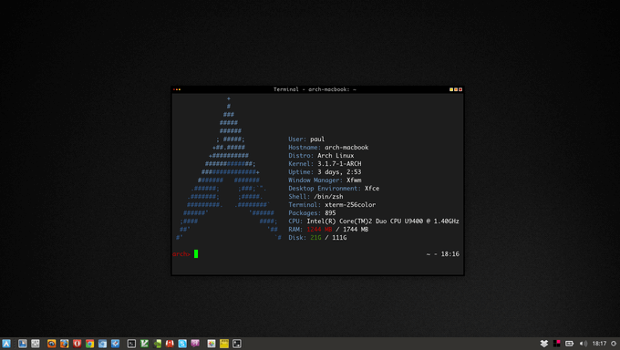

1. Linux Mint
Linux Mint's well-known motto ("From freedom came elegance"), is not just a saying. Based on Ubuntu, it is a stable, powerful, complete, and easy to use Linux distribution - and we could go on and on with a list of positive adjectives to describe Mint.Among Mint's most distinguishing features we can mentioned that during installation, you are allowed to choose from a list of desktop environments, and you can rest assured that once it's installed, you will be able to play your music and video files without any extra configuration steps since the standard installation provides multimedia codecs out of the box. 
2. Ubuntu
Perhaps this distribution does not need any introduction. Canonical, the company behind Ubuntu, has devoted great efforts to making it a popular and widespread distro to the point that you can now find it in smartphones, tablets, PCs, servers, and cloud VPS.Also, Ubuntu has the plus of being based on Debian, and is a very popular distribution among new users - which is maybe the reason for its sustained growth over time. Although not taken into consideration in this ranking, Ubuntu is the base for other distributions of the Canonical family such as Kubuntu, Xubuntu, and Lubuntu.
On top of all that, the installation image includes the Try Ubuntu feature, which lets you try Ubuntu before actually installing it on your hard drive. Not many major distributions provide such feature nowadays.
3. Fedora
Built and maintained by the Fedora Project (and sponsored by Red Hat), a world wide community of volunteers and developers, Fedora continues to be one of the top used distributions for years now due to its three main available versions (Workstation (for desktops), Server edition, and Cloud image), along with the ARM version for ARM-based (typically headless) servers.However, perhaps the most distinguishing characteristic of Fedora is that it’s always on the lead of integrating new package versions and technologies into the distribution. In addition, new releases of Red Hat Enterprise Linux and CentOS are based on Fedora.
4. Manjaro
Based on Arch Linux, Manjaro aims to take advantage of the power and the features that make Arch a great distribution while providing a more pleasant installation and operation experience out of the box both for new and experienced Linux users.Manjaro comes with preinstalled desktop environments, graphical applications (including a software center) and multimedia codecs to play audio and videos.
5. Arch Linux
Perhaps one of Arch's most predominant features is the fact that it is an independent open source distribution (meaning it is not based on any other) and yet it is a favorite of thousands of Linux users.Since Arch follows a rolling release model, you can get the latest software just by performing a regular system update using pacman, Arch's native package manager.
Traditionally, Arch is not recommended for new users mostly because the installation process won't make any decisions for you, so you are expected to have a degree of familiarity with Linux-related concepts in order to have a successful installation.
There are few other Arch-based distributions such as Apricity, Manjaro, Antergos, etc. for newbies who want to try out Arch derivatives without any trouble. 